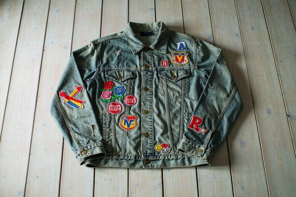
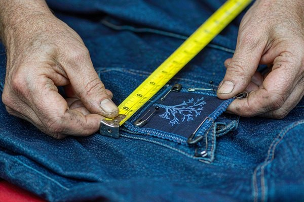
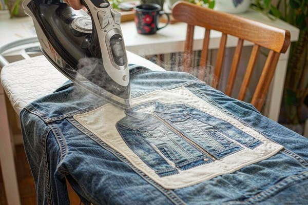

Denim Jacket Patches: Styling & Placement Guide
A blank denim jacket is the best patch canvas fashion ever invented — rigid, flat, and built to take a beating. This guide covers denim jacket patches end to end: where each patch belongs, how big it should be, which attachment survives a decade of washes, and the layout tricks that separate a curated jacket from a cluttered one.

1. Why the Denim Jacket Is the Perfect Patch Canvas
No garment carries patches quite like denim. Denim is a rigid cotton twill with flat, generous panels — no slippery lining, no stretch to fight the needle, and enough body to hold a heavy patch without sagging. Stitch a patch on once and it stays put for the life of the jacket.
The pairing is also cultural. From workwear and Levi's trucker jackets through counterculture, punk, and modern streetwear, patched denim has meant something for nearly a century. That history works in your favor: a patched jean jacket reads as personal and authentic, whether you're building a brand drop or a one-of-one piece. If you're choosing artwork first, our vintage and retro patch styles guide pairs naturally with denim's character.
2. Choosing the Right Patches for Denim
Denim forgives a lot, but three choices still make or break the result: size, coverage, and material.
Size to the zone
Match patch dimensions to the panel it lives on — our patch size guide has the full chart. Quick reference for jean jackets: chest patches run 2.5–4 inches wide, collar and sleeve accents 1.5–2.5 inches, and full-back statement patches 10–12 inches. Between two sizes, size down; denim's texture already adds visual weight.
Coverage and stitch density
Embroidery coverage changes both the look and the feel. 50% coverage reads casual and lets the denim breathe through the design; 75–100% coverage produces a dense, premium badge that stands off the fabric. On thick embroidery, heavy coverage on a 12-inch back patch adds real weight — one more reason attachment choice matters (Section 4). For brand work, our custom embroidered patches guide walks through coverage options in detail.
Material mix
- Embroidered patches: the denim classic — texture on texture, survives everything.
- Chenille: varsity energy, great for chest letters on oversized jackets.
- Leather: debossed minimal marks that age beautifully on indigo.
- PVC: rubberized 3D contrast against soft cotton — modern and loud.
3. The Placement Map: Chest, Collar, Sleeves, Back
Denim jackets have more usable real estate than any other garment, which is exactly why scattered, accidental layouts happen. Anchor every position to the measurements in our patch placement guide; the denim-specific numbers are below.
- Left chest: the signature spot. Patch center 7.5–9 inches down from the shoulder seam, aligned with the placket line.
- Right chest: mirror the left measurement for name tags, flags, or a paired set.
- Collar points: tiny 1–1.5 inch accents sit flat only on the points — never on the fold.
- Sleeves: center on the outer face, 1 inch below the shoulder seam, above the cuff ribbing.
- Back yoke: a 4–6 inch patch centered between the yoke seams reads balanced and intentional.
- Full back: top edge 2–3 inches below the collar seam, centered between the armhole seams. The hero zone for 10–12 inch artwork.

4. Attachment Methods Compared for Denim
Denim's thickness changes the attachment math. Here's how the three main options actually behave on it:
- Sew-on (the denim standard). A needle goes through heavy twill without complaint, and stitched patches survive industrial washing, abrasion, and decades of wear. For back patches and anything over 4 inches, sewing is the only option we recommend — full rundown in our sew-on guide.
- Iron-on (fast, with caveats). Denim takes heat well, but its thickness means you need a hot, dry press (150–160°C), firm pressure for 25–30 seconds, and a second press from the inside. Seam ridges and flat-felled seams create uneven pressure — keep patches on flat panels. Full method comparison in the backing types guide.
- Adhesive (test-drive only). Peel-and-stick backing is perfect for a trial run: pin the layout, wear the jacket for a week, then commit to thread or heat. It won't survive washing — treat it as a positioning tool, per our adhesive patch guide.

Pro Tip: Heat-Set, Then Stitch
The most durable DIY result on denim is a hybrid: iron-on first to lock the position, then a running stitch or machine tack around the border. The glue stops shifting while you sew, and the thread takes over permanently — no peeling corners, even after years of washing.
5. Layout Styles That Always Work
With placement and attachment settled, the layout decides whether the jacket looks curated or chaotic. Four patterns cover almost every successful patched jean jacket we've seen:
- The statement back. One large back patch, nothing else — or one back patch plus a single small chest mark. Maximum impact, zero clutter. Ideal for brands and club colors.
- The curated chest cluster. Three to five patches of mixed sizes arranged around the left chest and placket, keeping at least a half-inch gap and aligned edges. Works like a well-composed gallery wall.
- The all-over scatter. Eight-plus patches spread across chest, sleeves, collar, and back. The trick is rhythm: repeat 2–3 colors across every zone so the jacket reads as one composition, not a sticker bomb.
- The minimal mark. A single 2–3 inch emblem on the left chest or collar point. Quiet, premium, and impossible to get wrong.
Whatever the layout, check it worn, not flat: pin everything, put the jacket on, and look in a mirror from six feet away before a single stitch goes in. Our placement guide's mirror-check workflow applies to every style above.
6. Caring for a Patched Denim Jacket
Patched denim is low-maintenance, but three habits keep it looking new for years. Wash inside out on cold to protect thread colors and reduce abrasion on embroidery. Skip high-heat tumble drying — it's the main killer of iron-on adhesive; hang-dry instead. And inspect the borders once a season: any lifted corner on a sewn patch gets two stitches, any lifting iron-on edge gets a 10-second press with a cloth barrier. Five minutes of maintenance a year preserves a jacket that took hours to build.
Frequently Asked Questions (FAQ)
Q1: What size patch is best for the back of a denim jacket?
Between 10 and 12 inches wide for an adult jacket. That fills the back panel between the armhole seams without swallowing the yoke. Below 8 inches, a single back patch tends to look lost; above 13, it starts wrapping toward the side seams.
Q2: Is iron-on or sew-on better for denim jackets?
Sew-on, for anything you want to last. Denim handles a needle beautifully and stitched patches never peel. Iron-on works for quick results on flat panels, but thick twill needs high heat and firm pressure, and seams cause weak bonds. The best DIY result is iron-on plus a border stitch — hybrid security with half the effort.
Q3: Where should the first patch go on a jean jacket?
The left chest — patch center 7.5–9 inches down from the shoulder seam, aligned with the placket. It's the most recognizable branded position and anchors every layout that follows. Build outward from there: sleeves and collar next, back patch last.
Q4: How many patches is too many on a denim jacket?
There's no magic number — there's a rhythm rule. Five mismatched patches can look chaotic; fifteen with a repeating color palette can look curated. Keep 2–3 dominant colors consistent across every zone and leave breathing room between patches, and even an all-over layout stays coherent.
Q5: Can I remove and reposition patches later?
Sewn patches can be removed with a seam ripper, leaving tiny needle holes that fade into denim's texture. Iron-on patches peel with re-heating but often leave glue residue — a clean press with parchment paper lifts most of it. If you're unsure about a layout, test positions with adhesive patches or pins before committing.
Conclusion: Build It Once, Wear It for Decades
Denim rewards commitment. Anchor every patch to structural lines, size it to its panel, sew what you love, and repeat a tight color palette across the layout — do those four things and the jacket becomes better every year, not worse.
Designing patches for a brand drop or a club run? Send us your artwork and target jacket zones. We'll recommend sizes, coverage, and backing for denim — and deliver a free digital proof within 12 hours.
Need Custom Patches for Your Denim Line?
Upload your logo and tell us the placement zones. Our experts will spec the ideal patch sizes, coverage, and backing for denim jackets — with a free 12-hour proof and factory-direct pricing, no minimum order!
Get Free Quote